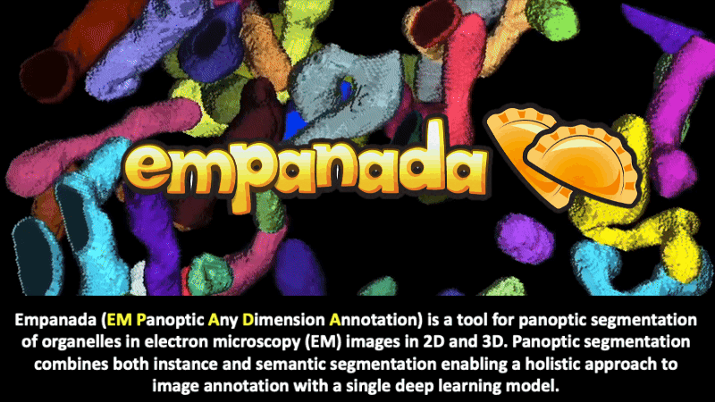
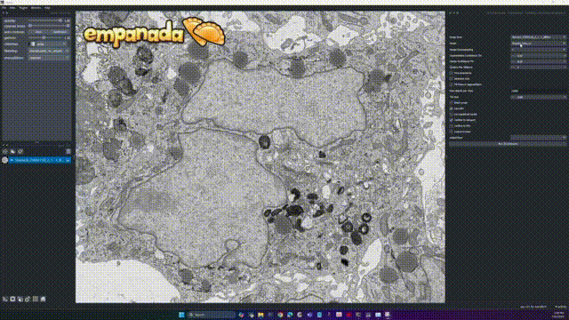
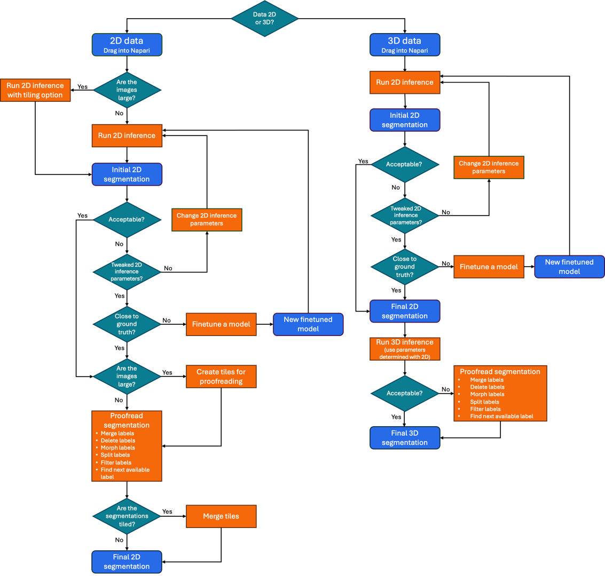
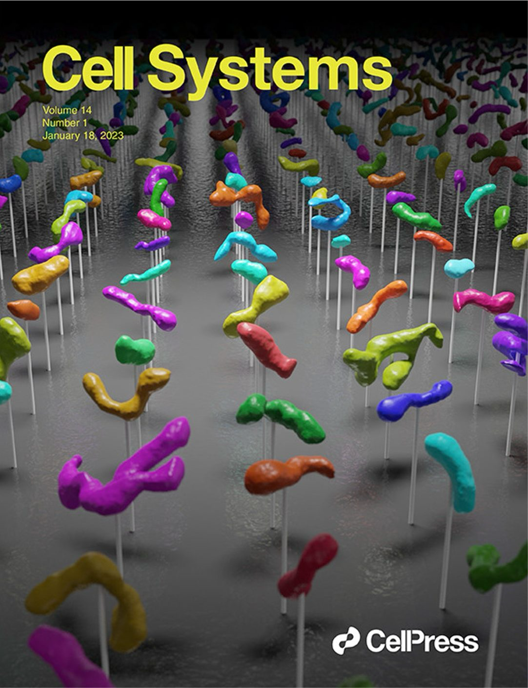

empanada-napari#
{kind=link}

Step-by-step installation instructions for the latest version for new or returning users
Detailed descriptions of parameters, outputs and demo videos of all the modules included in empanada-napari
Indepth tutorials on how to finetune, train and run inference through this plugin
Share your trained model with the us and the vEM community
{kind=link}

Important
empanada-napari version 1.2 has new models for nuclei and lipid droplets, new plugins and updated 2D and 3D inference modules. Check out how to update to the latest version here!
Note
Windows users who are working with GPUs, please see an important note about installation steps in our FAQ section.
Suggested Workflow#
{kind=link}

Citing this work#

If you use results generated by this plugin in a publication, please cite:
Conrad, R., & Narayan, K.
(2023). Cell Systems, 14(1), 58-71. e5. //doi.org/10.1016/J.CELS.2022.12.006
This version of empanada-napari was created by Abhishek Bhardwaj https://cmm.ccr.cancer.gov/volume-em/